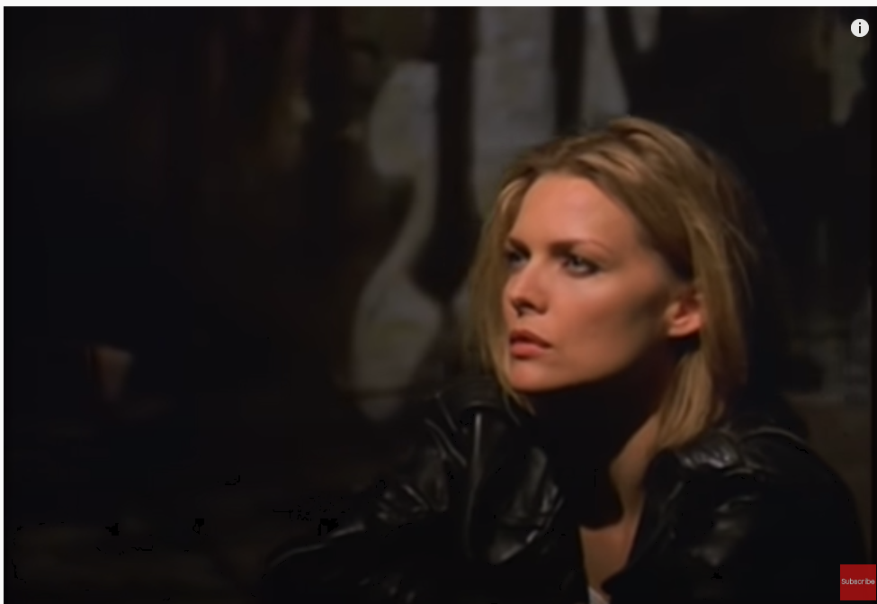
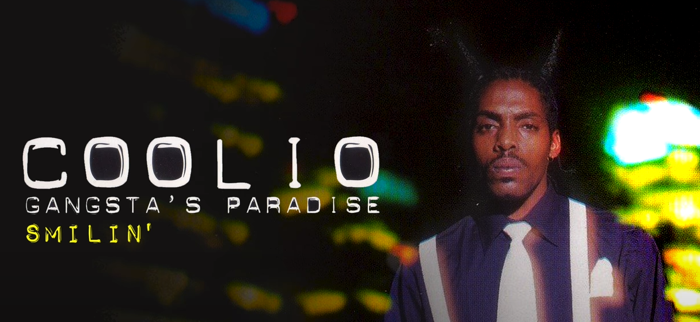

Informacija apie grupę:Artis Leon Ivey Jr. (born August 1, 1963), known professionally as Coolio, is an American rapper, singer, record producer, and actor. Coolio achieved mainstream success in the mid-to-late 1990s with his albums It Takes a Thief (1994), Gangsta's Paradise (1995), and My Soul (1997). He is best known for his 1995 Grammy Award-winning hit single "Gangsta's Paradise", as well as other singles "Fantastic Voyage" (1994), "1, 2, 3, 4 (Sumpin' New)" (1996) and "C U When U Get There" (1997).. |
|
|  |
"Gangsta's Paradise" is a song by American rapper Coolio, featuring singer L.V. The song was released on Coolio's album of the same name, as well as the soundtrack for the 1995 film Dangerous Minds. It samples the chorus and instrumentation, and includes some of the lyric, with altered meaning, of Stevie Wonder's 1976 song "Pastime Paradise".[3] Stevie Wonder apparently used 'past-time paradise' in an ironic reference to squandering of the present on nostalgically 'living in the past'. Coolio apparently deplores an ostensibly paradisiacal but factually dangerous and time-wasting 'gangsta' lifestyle. |
|  |
"Gangsta's Paradise" is a song by American rapper Coolio, featuring singer L.V. The song was released on Coolio's album of the same name, as well as the soundtrack for the 1995 film Dangerous Minds. It samples the chorus and instrumentation, and includes some of the lyric, with altered meaning, of Stevie Wonder's 1976 song "Pastime Paradise".[3] Stevie Wonder apparently used 'past-time paradise' in an ironic reference to squandering of the present on nostalgically 'living in the past'. Coolio apparently deplores an ostensibly paradisiacal but factually dangerous and time-wasting 'gangsta' lifestyle. |